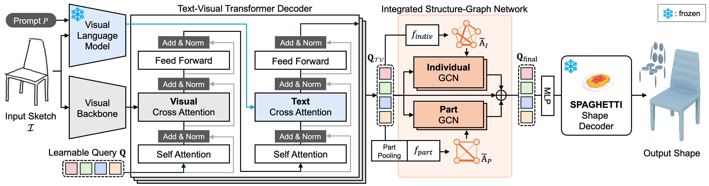

Overview
Abstract
A fundamental challenge in conditional 3D shape generation is to minimize the information loss and maximize the intention of user input. Existing approaches have predominantly focused on two types of isolated conditional signals, i.e., user sketches and text descriptions, each of which does not offer flexible control of the generated shape. In this paper, we introduce PASTA, the flexible approach that seamlessly integrates a user sketch and a text description for 3D shape generation. The key idea is to use text embeddings from a vision-language model to enrich the semantic representation of sketches. Specifically, these text-derived priors specify the part components of the object, compensating for missing visual cues from ambiguous sketches. In addition, we introduce ISG-Net which employs two types of graph convolutional networks: IndivGCN, which processes fine-grained details, and PartGCN, which aggregates these details into parts and refines the structure of objects. Extensive experiments demonstrate that PASTA outperforms existing methods in part-level editing and achieves state-of-the-art results in sketch-to-3D shape generation.